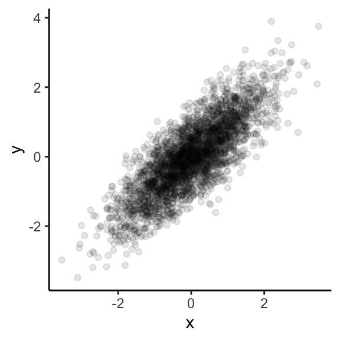

Introduction to R
Session 1
Session 1
Department of Sociology | University of Oxford
2024-10-09
Welcome to “Intro to R”
Two sessions:
Thursday, October 10th, 1pm - 4pm
Friday, October 11th, 9:30am - 12:30pm
Course website:
- www.github.com/caseybreen/intro_r
- Slides, exercises, and solutions
Course goals
- Overview: why
Ris a powerful tool for social science research
- Install
RandRStudio
- Introduction to
Rsyntax, data types, and data structures
- Basic understanding of data manipulation and visualization
Course agenda
Session 1
Module 1: Introduction to
R,RStudio,and code formatsModule 2:
Rprogramming fundamentals (syntax, operators, data types, data structures, sequencing)Module 3: Working with data (indexing vectors / matrices, importing data)
Session 2
Module 4: Importing and exporting data
Module 5: Data manipulation (
dplyr) and data visualization (ggplot2)Module 6: Best practices and resources for self-study
Module 1
Introduction to R, RStudio, and code formats
Learning objectives:
Installing
RandRStudioWhy
R?Understanding
RScripts,Rnotebooks, Quarto documents
R and RStudio
Ris a statistical programming language- Download: https://cloud.r-project.org
RStudiois an integrated development environment (IDE) forRprogramming- Download: http://www.rstudio.com/download
Why R?
Free, open source — great for reproducibility and open science
Powerful language for data manipulation, statistical analysis, and publication-ready data visualizations
Excellent community, lots of free resources
Data visualization

Easy to simulate + plot data
RStudio panes
Why RStudio?
All-in-one development environment: streamlines coding, data visualization, and workflow
Extensible: supports R — but also Python, SQL, and Git
Rich community: eases learning and problem-solving
Code formats: R Scripts vs. R Notebooks
RScriptsSimple: just code
Best for simple tasks (and multi-script pipelines)
RNotebooks (Quarto,RNotebook)Integrated: Mix of code, text, and outputs for easy documentation
Interactive: real-time code execution and output display
Quarto documents
“Notebook” Style: supports interactive code and text
Code cells: segments for code execution
Text chunks: annotations or explanations in Markdown format.
- Inline output: figures and code output display directly below the corresponding code cell
Installing packages
Running code
Run all code in a quarto document (or
Rscript, orRnotebook)- Exception: install packages, quick checks in console
To run a single line of code in a code cell
- Cursor over line,
Ctrl + Enter(Windows/Linux) orCmd + Enter(Mac).
- Cursor over line,
To run a full code cell (or script)
Ctrl + Shift + Enter(Windows/Linux) orCmd + Shift + Enter(Mac).
Live coding demo
- Demo of creating a new Quarto document and running code in a code cell
- Your turn next…
In-class exercise 0
Create a new quarto document
File -> New File -> Quarto Document -> Create
Create a new code cell
Insert -> Executable cell -> R
Practice running code below
Module 2
R programming fundamentals
Learning objectives:
Comprehend R objects and functions
Master basic syntax, including comments, assignment, and operators
Understand data structures and types in R
Objects
- Everything in R is an object
Vectors: Ordered collection of same type
Data Frames: Table of columns and rows
Function: Reusable code block
List: Ordered collection of objects
Functions
- Built-in “base” functions
- Custom, user-defined functions
# User-Defined Functions: Custom functions
my_function <- function(a, b) {
return(a^2 + b)
}
my_function(2, 3)[1] 7- Functions from packages
Assignment operators
Use
<-or=for assignment<-is preferred and advised for readability
Formally, assignment means “assign the result of the operation on the right to object on the left”
Arithmetic operators
- Addition / Subtraction
- Multiplication / division
- Exponents
Comparison and logical operators
Operators
| Operator | Symbol |
|---|---|
| AND | & |
| OR | | |
| NOT | ! |
| Equal | == |
| Not Equal | != |
| Greater/Less Than | > or < |
| Greater/Less Than or Equal | >= or <= |
| Element-wise In | %in% |
Data structures
There are lots of data structures; we’ll focus on
vectorsanddata frames.Vectors: One-dimensional arrays that hold elements of a single data type (e.g., all numeric or all character).Data frames: Two-dimensional tables where each column can have a different data type; essentially a list of vectors of equal length.
Vectors and data frames
Vectorexample
[1] 1 2 3 4 5Data frameexample
Data types
Each
vectorordata framecolumn can only contain one data type:Numeric: Used for numerical values like integers or decimals.Character: Holds text and alphanumeric characters.Logical: Represents binary values - TRUE or FALSE.Factor: Categorical data, either ordered or unordered, stored as levels.
NA (missing) values in R
NArepresents missing or undefined data.- Can vary by data type (e.g.,
NA_character_andNA_integer_)
- Can vary by data type (e.g.,
NAvalues can affect summary statistics and data visualization.What happens when you run the code below?
Generating sequences in R
- Method 1: Manually write out sequence using
c()
- Method 2: Colon operator (
:), creates sequences with increments of 1
- Method 3:
seq()Function: More flexible and allows you to specify thestart,end, andbyparameters.
Functions
Function: Input arguments, performs operations on them, and returns a result
For each of the below functions, what are the:
Input arguments?
Operations performed?
Results?
Keyboard shortcuts
Insert new code cell
macOS:
Cmd+Option+IWindows/Linux:
Ctrl+Alt+I
Run full code cell or script
macOS:
Cmd+Shift+EnterWindows/Linux:
Ctrl+Shift+enter
Assignment operator (creates <-)
macOS:
option+-Windows/Linux:
option+-
Live coding demo
Assignment (e.g.,
x <- 4)Logical expressions (e.g.,
x > 10)Creating a basic sequence
Your turn next…
In-class exercise 1
- Assign
xandyto take values 3 and 4. - Assign
zas the product ofxandy. - Write code to calculate the square of 3. Assign this to a variable
three_squared. - Write a logical expression to check if
three_squaredis greater than 10. - Write a logical expression testing whether
xis not greater than 10. Use thenegatesymbol (!).
Exercise 1 solutions
- Assign
xandyto take values 3 and 4.
- Assign
zas the product ofxandy.
- Calculate the square of 3 and assign it to a variable called
three_squared.
- Write a logical expression to check if
three_squaredis greater than 10.
- Write a logical expression to test whether
three_squaredis not greater than 10. Use thenegatesymbol (!).
In-class exercise 2
- Generate vectors containing the numbers 100, 101, 102, 103, 104, and 105 using 3 different methods (e.g.,
c(),seq(),:). In what scenarios might each method be most convenient? - Generate a sequences of all even numbers between 0 and 100. Use the
seq()function. - Create a descending sequence of numbers from 100 to 1, and assign it to a variable. Use the
seq()function.
Exercise 2 solutions
- Generate vectors containing the numbers 100 to 105 using three different methods (
c(),seq(),:). Discuss the convenience of each method.
- Generate a sequence of all even numbers between 0 and 100. Use the
seq()function.
- Create a descending sequence of numbers from 100 to 1, and assign it to a variable. Use the
seq()function.
Module 3
Working with vectors and data frames
Learning objectives
Select elements from
vectorsand columns fromdata framesSubset
data framesInvestigate characteristics of
data frames
Indexing vectors
- Basic indexing
[1] 1[1] 3- Conditional indexing
Working with data frames
Data framesare the most common and versatile data structure inRStructured as rows (observations) and columns (variables)
test_scores <- data.frame(
id = c(1, 2, 3, 4, 5),
name = c("Alice", "Bob", "Carol", "Dave", "Emily"),
age = c(25, 30, 22, 28, 24),
gender = c("F", "M", "F", "M", "F"),
score = c(90, 85, 88, 92, 89)
)
knitr::kable(test_scores)| id | name | age | gender | score |
|---|---|---|---|---|
| 1 | Alice | 25 | F | 90 |
| 2 | Bob | 30 | M | 85 |
| 3 | Carol | 22 | F | 88 |
| 4 | Dave | 28 | M | 92 |
| 5 | Emily | 24 | F | 89 |
Working with data frames
head()- looks at top rows of thedata frame$operator - access a column as avector
Subsetting data frames
Methods:
$: Single column by name.df[i, j]: Rowiand columnj.df[i:j, k:l]: Rowsitojand columnsktol.
Conditional Subsetting:
df[df$age > 25, ].
Quiz
Which rows and will this return?
- Which rows and which columns will this return?
Answers
Explore data frame characteristics
Check number of rows
Check number of columns
Check column names
Live coding demo
Generate random draws from a normal distribution using the
rnormfunctionSubset the vector of random draws to only include certain observations
Look at basic summary statistics
In-class exercise 3
Generate a
vectorof 100 observations drawn from a normal distribution with a mean of 10 and a standard deviation of 2. Use thernormfunction.What are the 1st, 10th, and 100th elements of this
vector?Calculate the mean of this
vector. How does thissamplemean relate to thepopulationmean (hint: population mean = 10) of the distribution?Calculate the difference between the sample mean and the population mean. Discuss the reason for the discrepancy.
Repeat steps 1-4 with a new sample size of 10,000. Did the difference between the sample mean and the population mean decrease? Why?
Exercise 3 solutions
# Generate a sample of 1,000 draws from a normal distribution with mean = 10 and sd = 2
sample_data_100 <- rnorm(100,
mean = 10,
sd = 2)
## look at 1st, 10th, and 100th element
sample_data_100[c(1, 10, 100)][1] 12.84759 14.38022 13.29334# Calculate the mean of this sample
sample_mean_100 <- mean(sample_data_100)
# Calculate the difference between the mean of the sample and the expected value of the mean
difference_100 <- abs(sample_mean_100 - 10)
difference_100[1] 0.1544429# Calculate the Z-score for the sample mean
sample_data_10000 <- rnorm(10000,
mean = 10,
sd = 2)
# Calculate the mean of this sample
sample_data_10000 <- mean(sample_data_10000)
# Calculate the difference between the mean of the sample and the expected value of the mean
sample_data_10000 <- abs(sample_data_10000 - 10)
sample_data_10000[1] 0.008899171Questions?
Thanks for your attendance and participation
Please independently complete all exercises in problem set 2 (and review solutions)
Questions: casey.breen@sociology.ox.ac.uk
Comments
Use
#to start a single-line commentComments are an important way to document code